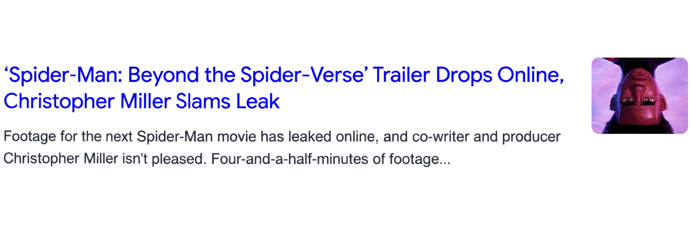

La ultima pelicula de Tom Holland esta siendo un exito grandioso.
Ya superó los US$2,000 millones en taquilla mundial. Esta pelicula se convirtió en la pelicula de Spider-Man mas taquillea del unirverso de Spider-Man
Se filtraron aproximadamente cuatro minutos del material de Spider-Man: Beyond the Spider-Verse.
El productor y guionista Christopher Miller reaccionó públicamente y expresó su molestia

Las preventas de Doomsday están avanzando 65% por encima de las de Brand New Day.
Durante el mismo período de comparación, lo que podría indicar otro estreno gigantesco para Marvel